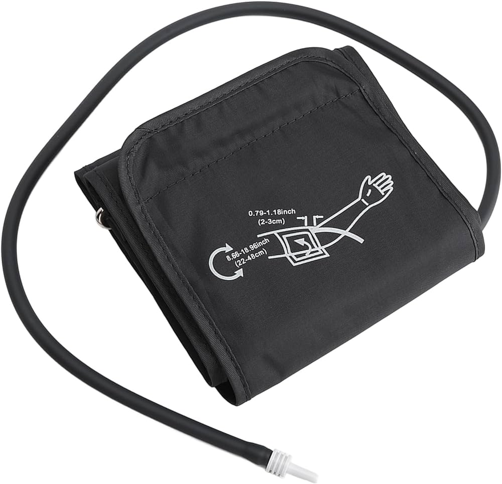

Accesorios
-
 Cable troncal de desfibrilación de ECG
Cable troncal de desfibrilación de ECG
-
Clavija única 3/5 derivaciones de 1.5 y 2.5 m.
-
 Cable conductor de ECG. 3 derivaciones de un solo pin
Cable conductor de ECG. 3 derivaciones de un solo pin
-
 Sensor dactilar para adulto SPO2 reutilizable
Sensor dactilar para adulto SPO2 reutilizable
-
 Cable intermedio Nellcor
Cable intermedio Nellcor
- Tubo PANI
-  Manguito de PANI para adulto.
- Sensor de temperatura cutánea
- Cable de gasto cardiaco
- Microstr etCO2 para adulto
- Papel de impresión (4 rollos)
Vista 120S
$1 098 678.00
El monitor de signos vitales Vista 120S de Dräger es un dispositivo médico utilizado para la monitorización continua de las funciones vitales de los pacientes en entornos clínicos, como hospitales, unidades de cuidados intensivos (UCI), salas de operaciones y salas de recuperación. Hoy día los hospitales buscan mejorar la calidad de atención de la manera más eficiente posible. El sistema de monitorización central Vista 120 es fácil de usar y le permite monitorizar las constantes vitales de hasta 64 pacientes conectados a los monitores de cabecera de Vista 120, lo que agiliza el trabajo del personal del hospital y mejora la seguridad del paciente.
Funciones
-
Muestra hasta 13 formas de onda en una pantalla fácil de configurar y ofrece un conjunto principal de parámetros esenciales:
- ECG de 3/5 derivaciones.
- SpO₂
- Presión arterial no invasiva (PANI).
- Respiración.
- Temperatura dual.
Parámetros avanzados
- Tres presiones arteriales invasivas.
- etCO2 de flujo principal y secundario
- Gasto cardíaco.
- Se pueden añadir módulos de parámetros externos como SCIO, CO2 y BIS (en el modelo C y el modelo C+ tras comprar el dispositivo).
Los envíos a toda la republica llegan en un máximo de 10 días